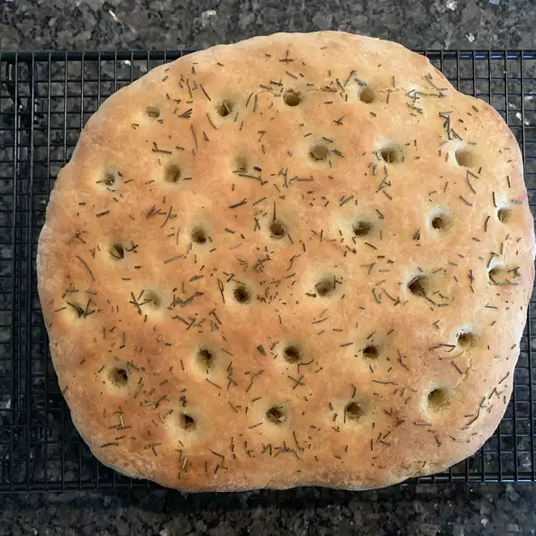

Foccia Bread

This focaccia bread is really yummy, and will taste great right out of the oven.
- 3 ½ cups all-purpose flour
- 1 teaspoon white sugar
- 1 teaspoon salt
- 1 tablespoon active dry yeast
- 1 cup water
- 2 tablespoons vegetable oil
- 1 egg
- 3 tablespoons olive oil
- 1 teaspoon dried rosemary, crushed
- Combine 1 cup flour, sugar, salt, and yeast. Mix well. Heat water and vegetable oil until warm, and add to yeast mixture along with the egg. Blend with an electric mixer at low speed until moistened. Beat for 2 additional minutes. Stir in 1 3/4 cup flour while beating, until dough pulls away from side of bowl.
- Knead in 3/4 cup flour on floured surface. Cover dough with a bowl, and let sit for 5 minutes. Place dough on a greased baking sheet. Roll out to 12 inch circle. Cover with greased plastic wrap and a cloth towel. Place in a warm place for 30 minutes.
- Uncover dough, and poke holes in it with a spoon handle at 1 inch intervals. Drizzle olive oil on dough, and sprinkle with crushed rosemary.
- Bake at 400 degrees F (205 degrees C) for 17 to 27 minutes, until just golden. Remove from baking sheet, and cool on rack.